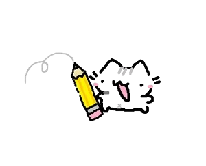

PORTFOLIO
My name is Lucía Puga, I am from Gavà and I was born in 2001. As a graduate in Stage Direction and Dramaturgy at ESAD (Institut del Teatre), I have worked mainly in the field of writing and character creation; specializing in audiovisual script and video game narratives through my TFG (in collaboration with UCM). During my university career I have written scripts focused on audiovisual, even for the radio field. Also, doing narrative mentoring for a video game currently in development for Virtual Reality.
But, outside of my academic career, I have learned thanks to great professionals to communicate through copywriting and social networks, making use of my knowledge of writing and graphic design learned self-taught. I also try to use my creative taste to model in 3D the characters in my scripts.
My goal is to focus my career and professional growth in the field of video games, using all the tools that my specialization in Script has given me and learning new ones. At the moment I am expanding my academic career by learning programming and video game development at the ENTI (School of New Interactive Technologies); where I am acquiring more experience in game design, with which I already had contact during my TFG.
Right now, I'm in the GameBCN pre-incubator working hand in hand with the A Tiny Eternity team.
